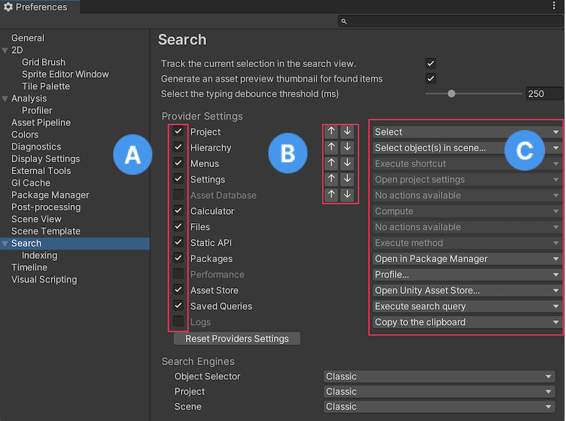

Preferences
Use preferences to customize the behavior of the Unity Editor.
To access the Preferences window, go to Edit > Preferences (Windows) or Unity > Preferences (macOS) from the main menu in Unity.
To navigate the Preferences window, use the search box to filter the list of settings categories and highlight keywords in the details pane on the right of the Preferences window.
The following preference categories are available:
- General
- 2D
- Analysis
- Asset Pipeline
- Colors
- Diagnostics
- Display Settings
- External Tools
- GI Cache
- Package Manager
- Scene view
- Search
- Custom package preferences
General
General 偏好设置可用于自定义 Unity 的总体使用方式。
| 属性 | 功能 | |
|---|---|---|
| Load Previous Project on Startup | 启用此设置可在启动时始终加载上一个项目。 | |
| Disable Editor Analytics (Pro only) | 启用此设置可禁止 Editor 自动将信息发送回 Unity。 | |
| Script Changes While Playing | 选择在 Editor 中运行游戏时脚本发生更改的情况下 Unity 采取的行为。 | |
| Recompile And Continue Playing | 重新编译脚本并继续运行场景。这是默认行为，但如果脚本依赖于任何不可序列化的数据，可能需要更改默认行为。 | |
| Recompile After Finished Playing | 推迟重新编译，直到手动停止场景，从而避免发生任何中断。 | |
| Stop Playing And Recompile | Immediately stops your Scene for recompilation, allowing you to quickly restart testing. | |
| Code Optimization On Startup | Choose whether to set code optimization mode to Debug or Release when the Unity Editor starts. Debug mode allows you to attach external debugger software, but gives slower C# performance when you run your Project in Play mode in the Editor. Release mode gives faster C# performance when you run your Project in Play mode in the Editor, but you can’t attach any external debuggers. For more information, see Code Optimization Mode. | |
| Editor Theme | Choose the background to use in the Unity Editor. | |
| Light | Applies the light grey background with black text. | |
| Dark | Applies the dark theme with white text. | |
| Editor Font | 选择要在 Unity Editor 中显示的字体。默认字体为 Inter。 | |
| Enable Alpha Numeric Sorting | 启用此设置可在 Hierarchy 窗口的右上角显示一个按钮，用于在变换 (Transform) 排序（默认）和字母数字 (Alphanumeric) 排序之间切换。 | |
| Interaction Mode | 指定 Editor 在最长空闲多长时间之后更新。一帧结束后，Editor 将等待指定的时间，直到下一帧开始。 这样可以调节 Editor 的性能，并减少 CPU 资源消耗和功耗。 例如，如果要测试 Editor 的性能，请将此属性设置为 No Throttling。如果要降低功耗（例如，延长笔记本电脑的电池续航时间），请将此属性设置为调速模式之一。 在调速模式下，如果与 Editor 进行交互（例如，通过在 Scene 视图中平移），Editor 将停止空闲模式。 注意：在运行模式下，Unity 会忽略您使用此偏好设置应用的任何调速模式。除非在 Game 视图中启用了 VSync 选项，或者将 Application.targetFrameRate 设置为 –1 以外的值，否则 Editor 会尽快更新。 |
|
| Default | 每次勾选时，Editor 最多闲置 4 毫秒。如果一帧用时 5 毫秒或更长时间，则 Editor 完全不会空闲，并且下一帧会自动开始。 | |
| No Throttling | 每一帧结束时，下一帧立即开始。Editor 永远不会等待，并且会尽快更新。 此模式消耗大量 CPU 资源。如果使用的是笔记本电脑，可能会导致电池电量快速耗尽。 |
|
| Monitor Refresh Rate | Editor 空闲的最长时间是监视器的帧率（以毫秒为单位）。对于大多数监视器，此值为 16 毫秒。 | |
| Custom | 指定应用程序可以处于空闲状态的最长时间。 选择此选项时，将显示 Frame Throttling (milliseconds) 属性。 |
|
| Frame Throttling (milliseconds) | 当 Interaction Mode 设置为 Custom 时，此属性指定 Editor 可以在帧之间处于空闲状态的时间长度。该值可介于 0 到 33 毫秒之间。0 等效于将 Interaction Mode 设置为 No Throttling。 | |
| Package Manager Log Level | Choose the level of detail you want the Package Manager logs to report. The options are: | |
| Error | Unexpected errors and failures only. | |
| Warn | Unusual situations that can cause issues. | |
| Info | High-level informational-only messages. | |
| Verbose | Detailed informational messages. | |
| Debug | High-level debugging messages. | |
| Silly | Detailed debugging messages. | |
| Enable extended Dynamic hints | Select this to enable extended dynamic hints, which displays more information when a property, object, or tool is hovered for enough time, or when a dynamic hint appears. | |
| Perform Bump Map Check | Select this to enable bump map checks upon material imports, which helps check that textures used in a normal map material slot are actually defined as normal maps. | |
2D
The 2D preference settings allow you to define the settings of 2D-related features and packages. When you install 2D related packages (such as the Tilemap Editor package) into your Project, their preference settings will appear in this section.
Physics
Use the Physics preferences to configure the 2D physics settings, such as the colors used in the UI.
| 属性 | 功能 | |
|---|---|---|
| Colliders | Set the colors for the following UI elements. | |
| Awake Color (Outline) | Set the color of the Collider 2D Gizmo’s outline when the Rigidbody 2D it’s attached to is Awake. | |
| Awake Color (Filled) | Set the color of the Collider 2D Gizmo’s interior fill when the Rigidbody 2D it’s attached to is Awake. | |
| Asleep Color (Outline) | Set the color of the Collider 2D Gizmo’s outline when the Rigidbody 2D it’s attached to is Asleep. | |
| Asleep Color (Filled) | Set the color of the Collider 2D Gizmo’s interior fill when the Rigidbody 2D it’s attached to is Asleep. | |
| Bounds Color | Set the color of the bounds for all PhysicsShape2D that a Collider 2D creates. | |
| Contacts | Set the colors used for the following UI elements. | |
| Contact Color | Set the color of the Collider 2D Gizmo’s contacts which are displayed as a directional arrow starting at the contact point in the direction of the contact normal. | |
| Contact Arrow Scale | Set the scale of the Collider 2D contacts arrow. Larger values draw the arrow larger. | |
Analysis
The Analysis preferences let you define settings for the Profiler.
| 属性 | 功能 |
|---|---|
| Frame count | 设置性能分析器要捕获的最大帧数。您可以将此数字设置在 300 到 2,000 之间。 |
| Show stats for ‘current frame’ | By default, when you select the Current Frame button and enter Current Frame mode, the frame indicator line doesn’t have annotations with the stats for the current frame. This is because the stats annotations might make it difficult to view data in real-time. To display the annotations, enable this setting. |
| Default recording state | 选择性能分析器应该在哪种记录状态下打开。可选择 Enabled、Disabled 或 Remember。Enabled 保持 Record 按钮在会话之间启用，而 Disbled 则将其禁用，无论您在性能分析会话期间是否将其打开或关闭。Remember 状态会记住您是否启用或禁用了 Record 按钮，并在您下次打开 Profiler 窗口时保持其上次的状态。 |
| Default editor target mode | Select what mode the Attach to Player dropdown should target by default. Choose from either Playmode or Editor. |
| Custom connection ID | Enter the connection name that you want to use for the device that’s running your application in the Attach to Player drop down in the Profiler Window or Console Window. |
Asset Pipeline
| 属性 | 功能 |
|---|---|
| Auto Refresh | Enable this setting to import Assets automatically as they change. |
| Import Worker Count % | Enter your Desired Import Worker Count for new projects in percentage of available logical CPU cores. For example, if your system has 16 logical cores and this preference is set to 25%, the Desired Import Worker Count for new projects is set to 4. If you set this value too high, your import worker processes need to compete over other processes and system resources such as reading and writing files. The default value of 25% is suitable for most situations. |
| Directory Monitoring (available only on Windows) | Enable this setting to monitor directories instead of scanning all project files to detect asset changes. |
| Compress Textures on Import | Disable this setting to skip texture compression during import. Textures are typically imported into uncompressed formats. |
| Verify Saving Assets | Enable this setting to verify which Assets to save individually. A dialog is shown any time Unity saves any assets. |
| Unity Accelerator (Cache Server) | |
| Default Mode | Define the default setting for the Cache Server, whether to enable or disable it by default. You can override this per Project in the Unity Editor settings. For more information, see Unity Accelerator. |
| Default IP address | 设置要使用的缓存服务器的默认 IP 地址。可以在 Unity Editor 设置中根据每个项目覆盖此设置。 |
| Check Connection | 单击此按钮尝试连接到远程缓存服务器。 |
Colors
The Colors preferences let you pick colors for various user interface elements in the Unity Editor.
| 属性 | 功能 | |
|---|---|---|
| 动画 | Use this setting to customize color preferences for animated properties. | |
| Property Animated | The color to indicate a property that’s currently being animated. | |
| Property Candidate | The color to indicate the animated property that you modified recently. | |
| Property Recorded | The color to indicate that an animated property automatically records changes in the animation clip. | |
| General | Use this setting to customize color preferences for General settings. | |
| Playmode Tint | The color to tint the editor to for ease of identifying when you’re in Play mode. Unity tints the whole editor with the color you pick here when you enter Play mode. Some operations in the Editor aren’t available when in Play mode, and you can reset some edited values when exiting the Play mode. | |
| Scene | Use this setting to customize preferences for a Scene. | |
| Background | Set the color for the scene camera to clear to when the Scene FX skybox setting is turned off. | |
| Background for Prefabs | Set the color for the scene camera to clear to when the Scene FX skybox setting is turned off. | |
| Contribute GI: Off / Receive GI: Light Probes | Set the color to display when ContributeGI is disabled in the GameObject’s Static Editor Flags. | |
| Contribute GI: On / Receive GI: Light Probes | Set the color to display when ContributorGI is enabled in the GameObject’s Static Editor Flags, and the Renderer’s ReceiveGI property is set to Lightmaps. | |
| Contribute GI: On / Receive GI: Lightmaps | Set the color to display when ContributeGI is enabled in the GameObject’s Static Editor Flags, and the Renderer’s ReceiveGI property is set to Light Probes. | |
| Grid | Set the color of the grid in the Scene view. | |
| Guide Line | Set the color of the Guide Line in the Scene view. | |
| Material Validator Pure Metal | Set the color for the Validate Albedo/Metal Specular debug render mode to indicate the material properties. | |
| Material Validator Value Too High | Set the color for the Validate Albedo/Metal Specular debug render mode to indicate when the material value is too high. | |
| Material Validator Value Too Low | Set the color for the Validate Albedo/Metal Specular debug render mode to indicate when the material value is too low. | |
| Selected Axis | Set the color for the selected handle to show highlighted in, when Move, Rotate, or the Scale tool is engaged. | |
| Selected Children Outline | Set the outline color for the children of the selected objects. | |
| Selected Material Highlight | Set the outline color that shows when clicking on a mesh in the MeshRenderer to ping the submesh in the Scene view. | |
| Selected Outline | Set the outline color for the selected GameObjects. | |
| UI Collider Handle | Set the color to use for the Unity UI’s padding visualization. | |
| Volume Gizmo | Set the color to indicate the audio source in Gizmo. | |
| Wireframe | Set the color of the wireframe when the wireframe render mode is active. | |
| Wireframe Overlay | Set the color of the wireframe when the textured wireframe render mode is active. | |
| Wireframe Selected | If you’ve enabled Selection Wire in the Gizmo options, then the selected wireframes appear in the color that you set here. | |
| X Axis | The color that you set here is indicated for any built-in transform tool handle affecting x-axis. | |
| Y Axis | The color that you set here is indicated for any built-in transform tool handle affecting y-axis. | |
| Z Axis | The color that you set here is indicated for any built-in transform tool handle affecting z-axis. |
Diagnostics
When you report a problem to Unity, the Unity Support Team might need you to enable diagnostic switches to help identify the cause. Running diagnostics on an application, whether in the Editor or a player, impacts performance and user experience. You should only run diagnostics when the Unity Support Team requires them.
If diagnostic switches are active in your application, Unity shows a warning in the console. To reset switches, in the Diagnostics tab, click Reset all.
If an active diagnostic switch prevents the Unity Editor from opening, use the --reset-diagnostic-switches parameter to reset all switches from the command line. For more information on using command line arguments at launch, see Command line arguments.
Display Settings
Use the Display Settings preferences to customize the behavior of the Game view for attached monitors.
| 属性 | 功能 |
|---|---|
| Sort Display Order (Windows Only) | Enable this setting to sort the display numbers of the attached monitors by distance to the main display. Note that this setting works on Windows only. |
| Show notification when entering fullscreen | Enable this to display a notification in fullscreen mode to view the shortcut required (CTRL+SHIFT+F7) to exit the fullscreen mode in Game view. When disabled, the shortcut notification to exit the fullscreen mode doesn’t appear. |
| Show game view toolbar on Fullscreen | When enabled, the Game view Control Bar that contains game objects like gizmos and stats is visible on the fullscreen mode. |
| Standalone simulation monitor mapping | Displays the number of standalone monitors mapped to your device. |
External Tools
使用 External Tools 偏好设置可设置用于编写脚本、处理图像和进行源代码控制的外部应用程序。
| 属性 | 功能 |
|---|---|
| External Script Editor | 选择 Unity 应使用哪个应用程序来打开脚本文件。Unity 会自动将正确的参数传递给内置支持的脚本编辑器。Unity 内置支持 Visual Studio Community、Visual Studio Code (VSCode) 和 JetBrains Rider。Open by file extension 选项会将设备的默认应用程序用于打开相关的文件类型。如果没有默认应用程序可用，设备会打开一个窗口，提示选择用于打开文件的应用程序。 |
| External Script Editor Args | This field controls parameters that Unity can send to your code editor when you open a file. The $(File), $(Line) and $(Column) arguments pass the filename, line number and column number to your external code editor. Your code editor uses these arguments to open the correct file with the cursor at the correct position. For example, if you double click an error message in the Unity Console, Unity passes these arguments from that error message to the external editor, which then opens the right file at the position where that error occurred.You can manually edit this field to customize the arguments Unity sends to your external code editor. Click the Reset argument button to reset this field to its default setting. |
| Generate all .csproj files | 启用此设置可生成所有 .csproj 文件。代码编辑器使用 .sln 和 .csproj 文件来访问有关项目的数据。.csproj 文件以 XML 格式存储描述性数据或元数据。此数据可能包括版本信息、平台要求、构建文件或数据库设置。 当这些文件存在时，代码编辑器可以使用其中包含的数据来提供有用的功能，例如突出显示潜在的编译错误。启用此设置可指示 Unity 在项目中尽可能创建 .csproj 文件。 |
|
Extensions handled （仅当在 External Script Editor 中选择 Rider 或 Visual Studio Code 时才可用） |
此字段确定外部脚本编辑器 (External Script Editor) 打开的文件类型。此字段预先填充了脚本编辑器默认打开的文件列表。要将其他文件类型添加到此列表，请键入文件扩展名，并用分号分隔每个扩展名。 |
| Image application | 选择希望 Unity 使用哪个应用程序来打开图像文件。 |
| Revision Control Diff/Merge | 选择希望 Unity 使用哪个应用程序解决源代码控制代码仓库中的文件差异。Unity 在工具的默认安装位置检测这些工具。在 Windows 上，Unity 会检查 TortoiseMerge、WinMerge、PlasticSCM Merge 和 Beyond Compare 4 的注册表项。 有关更多信息，请参阅下面的 Revision Control Diff/Merge 部分。 |
Revision Control Diff/Merge
Unity 目前支持以下工具：
- SourceGear DiffMerge
- TkDiff
- P4Merge
- TortoiseMerge
- WinMerge
- PlasticSCM Merge
- Beyond Compare 4
Note: As these are third-party tools that Unity doesn’t include by default, you might want to download and install them separately.
要设置自定义修订工具，请按照下列步骤操作：
- From the Revision Control Diff/Merge dropdown list, select Custom Tool.
- 输入自定义工具的安装文件夹的路径。在 Mac 上，应指向该工具的安装文件夹中的 Contents / MacOS 文件夹。
- 输入有关双向差异、三向差异和合并的参数。
要指定修订工具中的文件布局，请使用以下参数：
| 属性 | 功能 |
|---|---|
#LTITLE |
左侧标题 |
#RTITLE |
右侧标题 |
#ATITLE |
上级标题 |
#LEFT |
左侧文件 |
#RIGHT |
右侧文件 |
#ANCESTOR |
上级文件 |
#OUTPUT |
输出文件 |
#ABSLEFT |
左侧文件的绝对路径 |
#ABSRIGHT |
右侧文件的绝对路径 |
#ABSANCESTOR |
上级文件的绝对路径 |
#ABSOUTPUT |
输出文件的绝对路径 |
例如：

GI Cache
The Global Illumination (GI) system uses a cache on each computer to store intermediate files used to pre-compute real-time Global Illumination. All projects on the computer share the cache.
| 属性 | 功能 |
|---|---|
| Maximum Cache Size (GB) | Use the slider to set the maximum GI cache folder size. Unity keeps the GI cache folder size below this number whenever possible. Unity periodically deletes unused files to create more space (deleting the oldest files first). This is an automatic process, and doesn’t require you to do anything. Note: If the current Scene is using all the files in the GI cache, increase your cache size. Otherwise, resource-intensive recomputation occurs when baking. This can happen when the Scene is large or the cache size is too small. |
| Custom cache location | 启用此选项可允许设置 GI 缓存文件夹的自定义位置。默认情况下，GI 缓存存储在 Caches 文件夹中。所有项目共享缓存文件夹。 提示：将 GI 缓存存储在 SSD 驱动器上可以在烘焙过程受 I/O 限制的情况下加速进行烘焙。 |
| Cache Folder Location | 单击 Browse 按钮可指定缓存的位置。 |
| Cache compression | This option enables Unity to compress datafiles in the GI cache to use less hard drive space. The datafiles are LZ4-compressed by default, and the naming scheme is a hash and a file extension. Unity computes the hashes based on the inputs to the lighting system, so changing any of the following settings, properties or assets can lead to lighting recomputation: - Materials (Textures, Albedo, Emission) - Lights - Geometry - Static flags - Light Probe groups - Reflection probes - Lightmap Parameters Tip: If you need to access the raw Enlighten Realtime Global Illumination data, disable Cache Compression and clear the cache. |
| Clean Cache | Use this button to clear the cache directory. It’s not safe to delete the GI Cache directory manually while the Editor is running. This is because the Editor creates the GiCache folder when it starts and maintains a set of references to those files. The Clean Cache button ensures that the Editor releases all references to the files on disk before they’re deleted. |
| Cache size is | 显示当前缓存大小。 |
| Cache Folder Location | 显示当前缓存文件夹的位置。 |
Package Manager
Use the Package Manager preferences to change the default cache location for the following packages:
- Packages installed from the Unity Registry
- Packages downloaded from the Asset Store
| 属性 | 功能 |
|---|---|
| 包 | Set the cache location that determines where packages installed from the Unity Registry are stored. For more information, see Customizing the global cache location. |
| My Assets | Set the cache location that determines where packages downloaded from the Asset Store are stored. For more information, see Customize the Asset Store cache location. |
Scene View
使用 Scene View 偏好设置自定义对象在编辑时的放置和可见性。
| 属性 | 功能 |
|---|---|
| Create Objects at Origin | 启用以在原点创建新对象（与 Scene 轴心相反）。默认禁用。 |
| Create Objects with Constrained Proportions | Enable to define the default behavior for Scale in the Transform component. If enabled, when you adjust the value of a scale axis, the other values adjust proportionately. |
| Line Thickness | 设置您的转换工具的线条粗细。 |
| Enable filtering while searching | 启用可使 Scene 视图中的任何不匹配项变灰。默认启用。 |
| Enable filtering while editing LOD groups | Enable to gray out other objects in the scene while editing level of detail (LOD) groups. Enabled by default. |
Search
Use the Search preferences to set your search preferences for the Editor.
Tip: You can also access the Search preferences in one of the following ways:
Enter ? (question mark) in the search field and select Open Search Preferences from the results.
From More Options (:) in the top-left of the Search window, select Preferences.

Search Preferences
| 设置 | 功能 | |
|---|---|---|
| Track the current selection in the search | Enable this setting to execute the SearchProvider.trackSelection callback each time the Search selection changes.The callback pings Assets in the Project window or Hierarchy window, which can slow Search navigation in large Projects. |
|
| Generate an asset preview thumbnail for found items | Enable this setting to display thumbnails for items that are currently visible in the results pane of the Search window. When you disable this setting, Search displays a generic icon. This is useful in large Projects, where generating icons can slow Search navigation. |
|
| Select the typing debounce threshold (ms) | The debouncing threshold is the time the system waits for the user to finish typing before executing the search. | |
| Provider Settings | ||
| A [Provider Toggles] | Enable and disable providers. When you disable a provider, Search ignores it when executing searches. | |
| B [Provider Order] | Use these settings to modify the order in which search items are shown on the screen. All items of a given provider priority appear before any lower priority items. | |
| C [Default Actions] | Use these settings to choose the default actions to execute when you select (for example, double-click) an item in the search results. | |
| Reset Priorities | Resets all providers to their default on/off state and priority. | |
| Search Engines | Set the search fields in the Object Selector, Project, and Scene to one of the available search engines. Classic - The original search functionality. Advanced - The latest version of Search for Unity (formerly QuickSearch). |
|
Indexing
Set the Custom index pages by selecting them or deselecting them from the Custom Indexers dropdown list.
包的自定义偏好设置
Some Asset Store or Unity packages add their own custom preferences to the Preferences window. Typically, these use the package name as the preferences category. In this example, you can see the Cinemachine package preferences:
有关特定包的偏好设置的信息，请参阅该包的文档。本部分仅包含标准 Unity 偏好设置的文档。